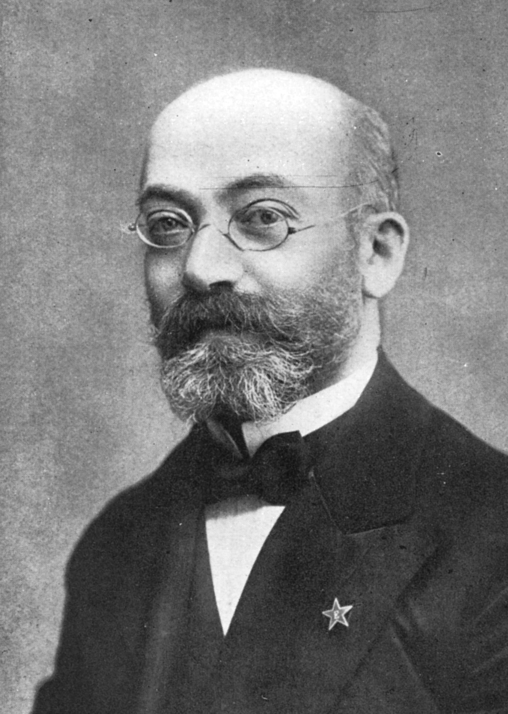
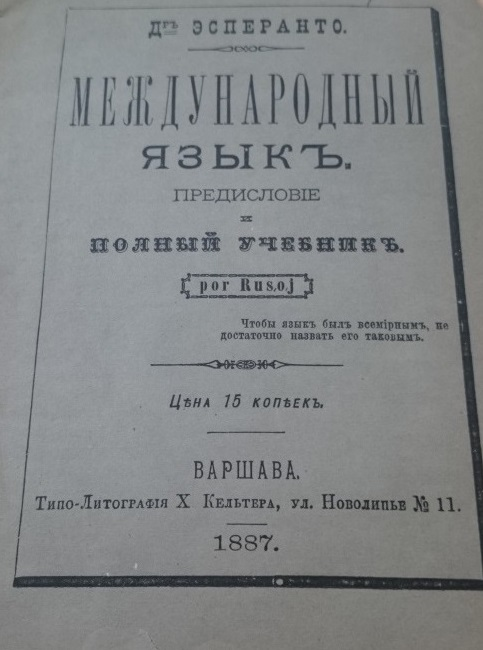
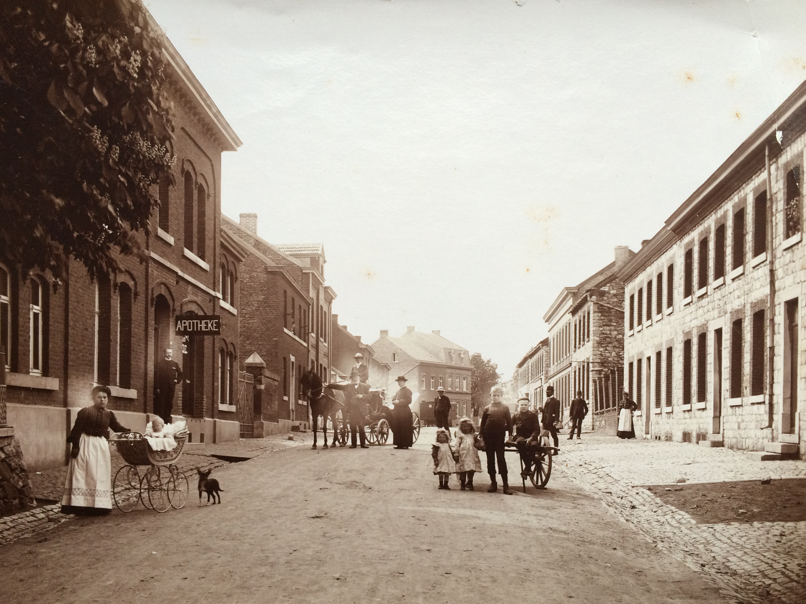
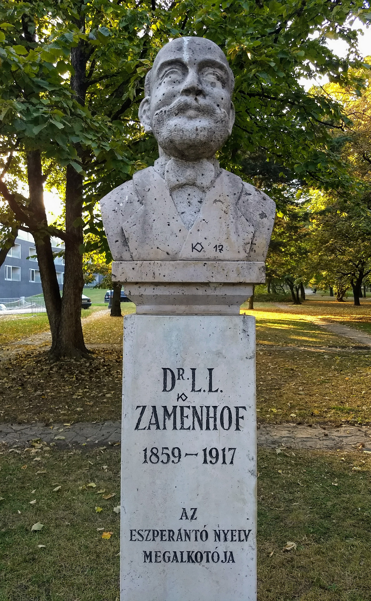

Ludwik Lejzer Zamenhof (en polaco: Ludwik Łazarz Zamenhof) o simplemente L. L. Zamenhof fue un médico oftalmólogo polaco y creador de la lengua auxiliar planificada esperanto. Fue nominado doce veces al Premio Nobel de la Paz.
Recibió el nombre hebreo de Eliezer, transcrito en los documentos como Lejzer, un nombre polonizado. Siguiendo la costumbre, utilizaba también un segundo nombre no judío con la misma inicial, Ludwik. Asistió a la escuela de Białystok entre 1869 y 1873, y desde diciembre de 1873 hasta julio de 1879 al Instituto Alemán de Varsovia. Después de dos años de estudio en la Facultad de Medicina de Moscú y cuatro en la de Varsovia, recibió su título de médico en la especialidad de oftalmología, que terminó de cursar en Viena (1886).
Su abuelo, Fabian Zamenhof, fue traductor y profesor de lenguas, y su padre, Mordechai Mark Zamenhof, ejerció como profesor de alemán y francés. El joven Zamenhof tenía un talento especial para los idiomas; sus lenguas maternas eran el polaco, el ruso y el yidis o judeoalemán, pero siempre consideró el ruso su idioma nativo (solo en él y en esperanto escribió poesía). También hablaba alemán con fluidez; posteriormente aprendió francés, griego, hebreo, Volapük, latín e inglés. De español, italiano y algunos otros idiomas, solo tenía conocimientos básicos. Este poliglotismo era solo el reflejo de las condiciones en que vivía y que no pudieron dejar de influir en el pensamiento de un joven sensible.
En 1898 se instaló definitivamente en Varsovia, donde ejerció hasta su muerte. La profesión médica le proporcionó muchos más sinsabores que beneficios; debido a la pobreza de sus clientes, tenía que visitar diariamente entre treinta y cuarenta pacientes, a pesar de lo cual ganaba solo lo justo para garantizar una vida modesta a su familia.
De acuerdo con su testimonio, ya en su infancia en la ciudad de Białystok (que en aquel entonces formaba parte del Imperio ruso, aunque actualmente pertenece a Polonia, y donde había importantes comunidades de polacos, judíos, rusos, alemanes y lituanos) había observado cómo las diferencias entre los pueblos a causa de la diversidad de lenguas y religiones podían causar serios conflictos. Durante su vida, el estaba fascinado por la idea de crear un idioma tolerante, libre de los horrores de la guerra. Vivió en la época de los pogromos rusos, y a medida que el antisemitismo crecía, él soñaba que un día las personas vivirían en un mundo sin barreras ni desigualdades. Para convertir su sueño en realidad, creyó que lo mejor que podía hacer era crear una lengua auxiliar internacional, y así lo hizo, en un proceso que fue largo y laborioso.
La idea fundamental de una lengua auxiliar internacional es que no es el idioma nativo de nadie, sino que las personas pueden aprenderla como una segunda lengua de manera rápida, para facilitar una conversación sencilla con individuos de todos los rincones del mundo. El esperanto no está pensado para reemplazar a otros idiomas, sino para complementarlos.
Continuó con sus esfuerzos a pesar de que en 1879 apareciera el volapük, resultado del trabajo del sacerdote Johann Martin Schleyer, en el proyecto de crear una lengua internacional. Zamenhof aprendió volapük, pero los defectos de este idioma le motivaron aún más para proseguir con sus planes. Finalmente, en 1887 y con la ayuda económica de su suegro lituano, logró publicar un folleto en el que exponía los principios de la nueva lengua en el Lingvo internacia. Antaŭparolo kaj plena lernolibro(Lengua internacional. Prefacio y libro de texto completo), con el seudónimo de Doktoro Esperando (que en español puede traducirse como Doctor Esperanzado). Esta palabra acabó posteriormente por convertirse en el nombre de su creación lingüística. Esta publicación se denominó más tarde Unua Libro (Primer libro).
A finales de 1889, debido, sobre todo, a tan grande actividad editorial, quedó completamente arruinado. A partir de ese momento, aunque siguió siendo hasta 1905 el motor principal del movimiento, la divulgación dependió materialmente de los recursos económicos de los primeros seguidores.
La palabra se forma de forma análoga a los nombres de países. En esperanto, los nombres de los países se formaban tradicionalmente a partir del nombre étnico de sus habitantes más el sufijo -ujo. Por ejemplo, "Francia" era Francujo, de franco (un francés).
El término análogo a Francujo sería Esperantistujo (Esperantista-nación). Sin embargo, eso transmitiría la idea del cuerpo físico de las personas, mientras que usar el nombre del idioma como base de la palabra le da la connotación más abstracta de una esfera cultural.
En 1908, el Dr. Wilhelm Molly intentó crear un estado de esperanto en el condominio prusiano-belga de Neutral Moresnet, conocido como "Amikejo" (lugar de amistad). No está claro qué pasó con él, y Neutral Moresnet se anexó a Bélgica en el Tratado de Versalles de 1919.
Durante la década de 1960, surgió un nuevo esfuerzo por crear un estado de Esperanto, que esta vez se llamó República de Rose Island. La isla estatal se encontraba en el mar Adriático, cerca de Italia.
En Europa, el 2 de junio de 2001, varias organizaciones (prefieren llamarse establecimientos) fundaron la Esperanta Civito, que "pretende ser un sujeto de derecho internacional" y "pretende consolidar las relaciones entre los esperantistas que se sienten pertenecientes al grupo lingüístico de la diáspora que no pertenece a ningún país". Esperanto Civito siempre usa el nombre Esperantujo (introducido por Héctor Hodler en 1908), que a su vez se define de acuerdo con su interpretación del raumismo, y el significado, por lo tanto, puede diferir de la interpretación tradicional en esperanto de la palabra esperantujo.
En 2017 se lanzó una aplicación para socios de aprendizaje de idiomas llamada Amikumu, que permite que los hablantes de esperanto se encuentren.
En 1888, el periodista Leopold Einstein fundó en Núremberg (Alemania) el primer grupo de esperanto; un año después, en 1889, el mismo periodista fundó la primera gaceta en esperanto: La Esperantisto. En ella publicaron sus escritos autores como Zamenhof, Antoni Grabowski, Solovjev, Devjatin o León Tolstói. Tras la colaboración de Tolstói, que fue uno de los mayores defensores del esperanto, la censura zarista decidió prohibir la entrada de ejemplares de la revista al Imperio ruso.
En 1898, el expresidente de la Primera República Española, Francisco Pi y Margall, dio a conocer el esperanto en Madrid mediante un artículo de prensa publicado en el diario republicano El nuevo régimen. Después de la fundación de los primeros círculos esperantistas, de los cursos de esperanto y del contacto con grupos similares en otros países, el movimiento esperantista de España se sintió con fuerzas para crear la primera agrupación de ámbito estatal con el objetivo de difundir el idioma internacional. La Sociedad Española para la Propaganda del Esperanto se fundó en 1903. Ese mismo año se creó la Asociación Valenciana de Esperanto.
Barcelona se constituyó pronto en centro esperantista mediante la labor del escritor Frederic Pujulà, considerado el introductor y máximo difusor del esperanto en Cataluña, que hizo una gran difusión desde la revista modernista Juventud, con colaboraciones en La Voz de Cataluña y con la publicación de un gran número de obras didácticas, como gramáticas, cursos y vocabularios.
En los primeros años del movimiento, los esperantistas solo mantuvieron contacto por medio de correspondencia. En 1905, sin embargo, tuvo lugar en la ciudad francesa de Boulogne-sur-Mer el I Congreso Mundial de Esperanto, con 688 participantes procedentes de treinta países y que consolidó los fundamentos de la comunidad esperantista. En este congreso se aceptó la Declaración de Boulogne, un documento constitucional básico en el que se definen las causas y objetivos del movimiento esperantista y donde se fijó oficialmente el Fundamento de Esperanto como reglamento esencial e inalterable de la lengua. Desde entonces, cada año, excepto en períodos de guerra, se han celebrado congresos internacionales en los cinco continentes, aparte de muchos otros encuentros y actividades.
En 1954, las Naciones Unidas — a través de la UNESCO — otorgó apoyo oficial al Esperanto como lengua auxiliar internacional en la Resolución de Montevideo. Sin embargo, el esperanto aún no es uno de los idiomas oficiales de la ONU.
En la actualidad, el esperanto es una lengua completamente desarrollada, que evoluciona con sus hablantes bajo recomendaciones de la Academia del Esperanto y la base del Fundamento de Esperanto. Su comunidad cuenta con miles de hablantes a escala mundial y una gran cantidad de recursos lingüísticos. Entre los esperantófonos más conocidos internacionalmente se encuentran el premio Nobel de Ciencias Económicas Reinhard Selten, la campeona mundial de ajedrez Zsuzsa Polgár y Tivadar Soros, padre del financiero George Soros.
La Asociación Universal de Esperanto (UEA) mantiene relaciones oficiales con la UNESCO, las Naciones Unidas, UNICEF, el Consejo de Europa, la Organización de Estados Americanos y la Organización Internacional de Normalización (ISO). En 2009 fue presentada al Premio Nobel de la Paz, entre otros por el Parlamento polaco. La Sociedad Mongola de Esperanto se ha convertido en la 70.ª asociación nacional de la UEA. En una veintena de países africanos funcionan asociaciones esperantistas nacionales.
Numerosas universidades incluyen el esperanto en sus cursos de Lingüística y otras lo ofrecen como una materia separada. Digna de mención es la Universidad de Poznan (Polonia), con estudios de Interlingüística y Esperantología en la Universidad de Adam Mickiewicz.
El Anuario Bibliográfico de la Asociación Norteamericana de Idiomas Modernos registra más de 300 publicaciones científicas sobre esperanto cada año. La biblioteca del Museo Internacional de Esperanto de Viena (que forma parte de la Biblioteca Nacional de Austria) tiene más de 35 000 ejemplares en esta lengua. Otras grandes bibliotecas, con más de 20 000 ejemplares cada una, incluyen la Biblioteca Hodler en las oficinas centrales de EAU en Róterdam, la biblioteca de la Asociación Británica de Esperanto en Stoke-on-Trent, la Colección alemana de esperanto en Aalen y la biblioteca del Instituto Japonés de Esperanto en Tokio.
Con la popularización y expansión de las nuevas tecnologías, el esperanto ha ganado una nueva fuerza propulsora y gracias a ello se puede hablar de un renacimiento del idioma. En Internet se puede acceder a miles de páginas web en esperanto, cursos, foros, salas de chat, blogs, grupos de debate, canales y vídeos, prensa, etc. Duolingo, la popular web y aplicación cuenta para septiembre de 2017 con más de un millón de estudiantes de Esperanto en su versión en inglés y cerca de doscientos mil en español. En 2011 surgió Muzaiko, la primera radio 24h que retransmite por Internet. Un dato significativo de la situación del esperanto es el número de artículos en esta lengua: la Vikipedio, Wikipedia en esperanto, posee más de 242 000 artículos en octubre de 2017. En febrero de 2012, el traductor de Google incorporó el esperanto a su lista de idiomas.